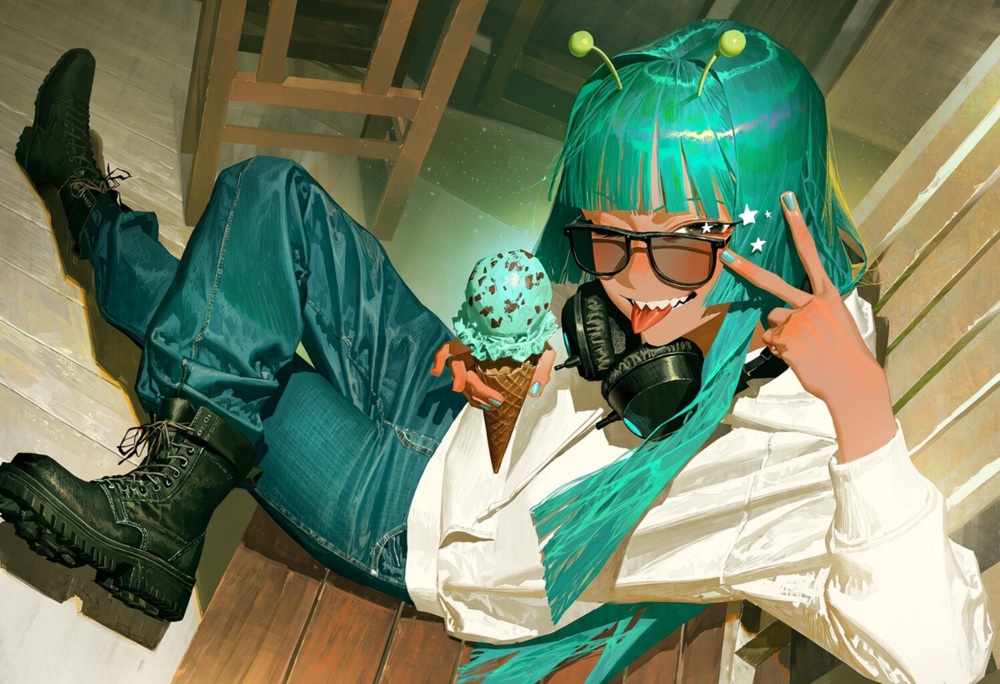

시게르트 · 소렌
이전 공개 캐릭터의 리뉴얼을 준비하고 있습니다.

チョコミント星人 / m1nch0wh4ck01 / CHARACTER COLLECTION
조건에 맞는 작품이 없습니다. 검색어나 플랫폼을 바꿔주세요.
02 / WORK IN PROGRESS
이전 공개 캐릭터의 리뉴얼을 준비하고 있습니다.
새로운 남캐 개인챗을 추가할 예정입니다.
03 / ABOUT THE CREATOR
목마른 놈이
스스로 우물 판 곳.
캐릭터 이미지는 AI 생성 / 생성 후 리터칭합니다.
유저노트에 서사 진전 및 관계성 등 기입을 추천드립니다.
👾 홈페이지 아이콘은 애스크로 연결됩니다.
질문이나 남기고 싶은 이야기는 애스크로 보내주세요.
주소를 확인하거나 작품 수집첩으로 이동해 주세요.